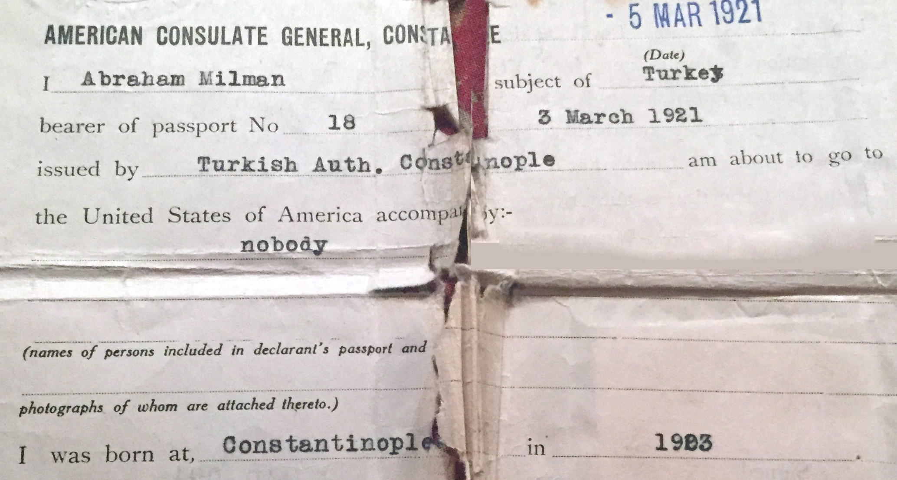
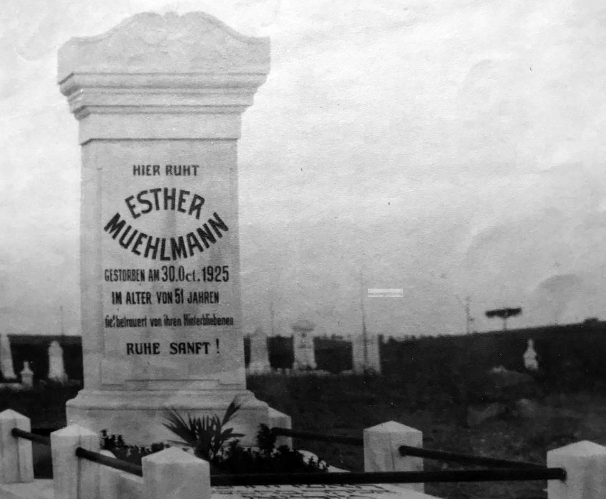
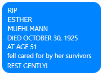
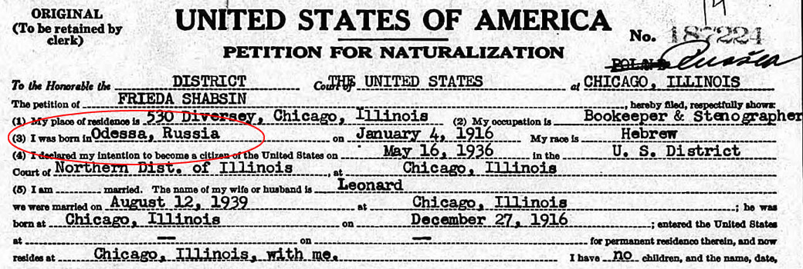
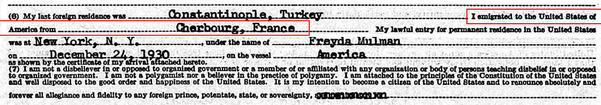

Some Family History and that my mom's (and Yeva's) mom was buried in a cemetery in Istanbul.   And as I thought about it, I seem to remember that my brother Joel has a Turkish passport that belonged to my mom. But I'm pretty sure I also remember my mom talking about living in Odessa, Ukraine, which this excerpt from her Petition For Naturalization  "I was born in Odessa, Russia" shows she actually was born there! The fact that she and all her siblings spoke French as their primary language when they were all gathered together makes me believe they also lived in France for a while (though my cousin Judy remembers her mom telling her when they went to school in Turkey, they spoke French there.) Then there's this, also from her Petition For Naturalization.  "I emigrated to the United States of America from Cherbourg, France" So maybe they did live in France for a while. (In fact, for most of my youth, I thought my mother was born in France.) Of course, as can be seen from some of the content in this website, Aunt Yeva wound up in Russia. I would love to know more about my mom's family's migration through Europe and to the U.S., but, alas, there's no one left who knows much more about it. |